Inspiring Artistz
The artists featured here have shaped my vision and sound, inspiring me through their style, energy, and authenticity. I draw inspiration from their creativity, passion, and the way they connect deeply with their audiences.
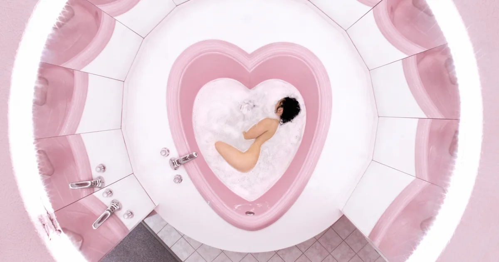
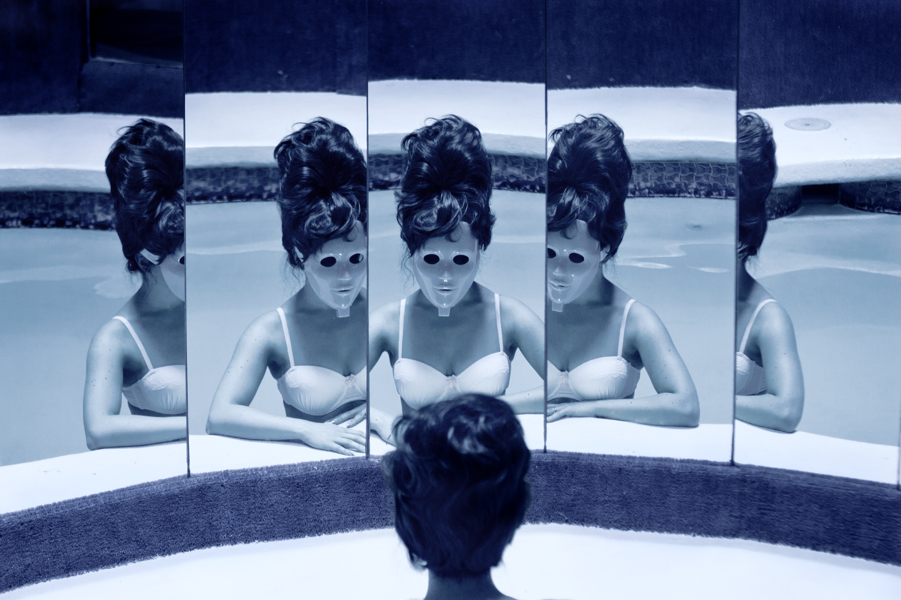
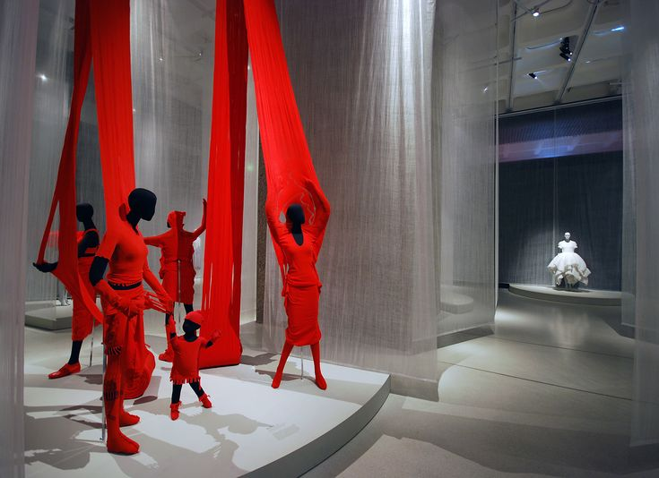
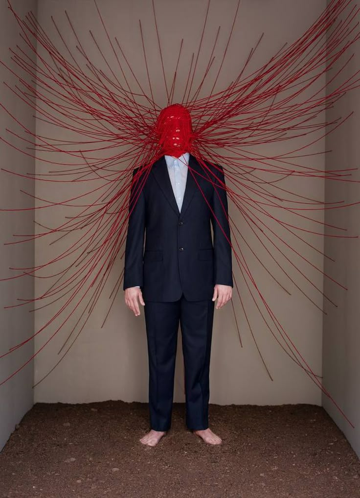
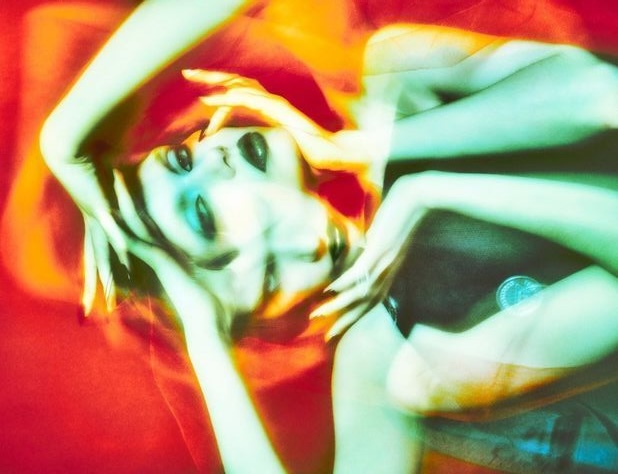
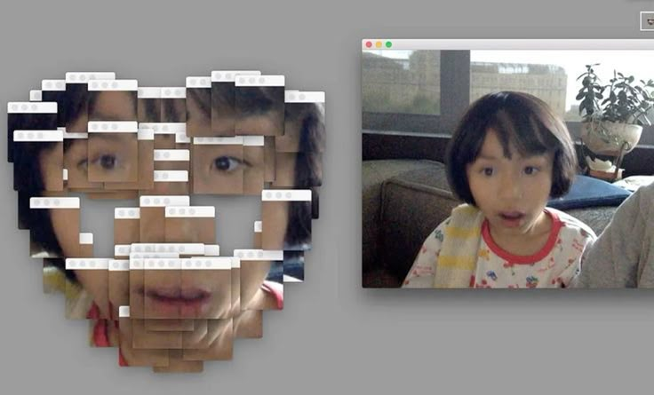


 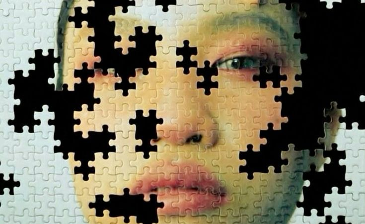
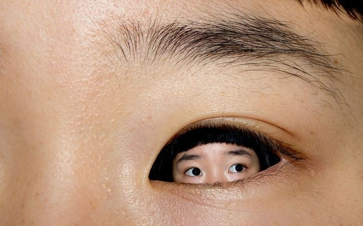
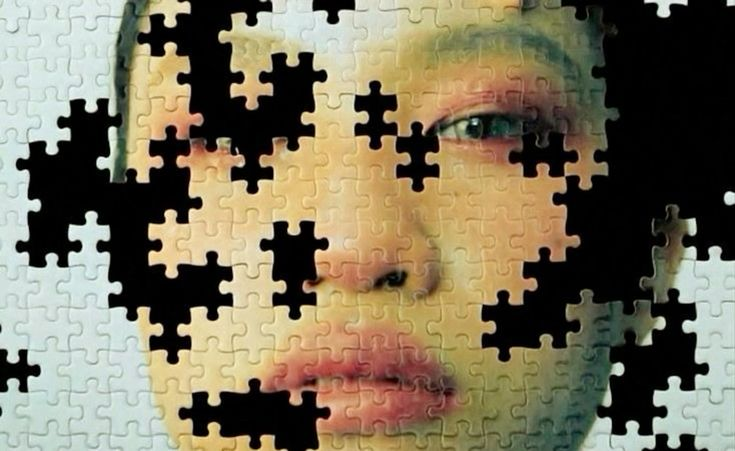
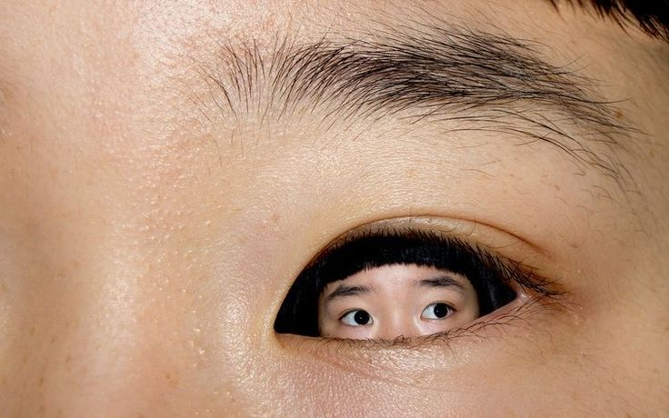
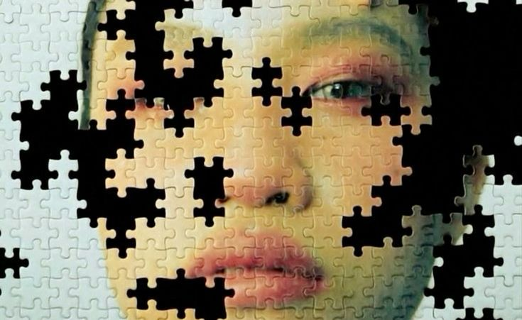
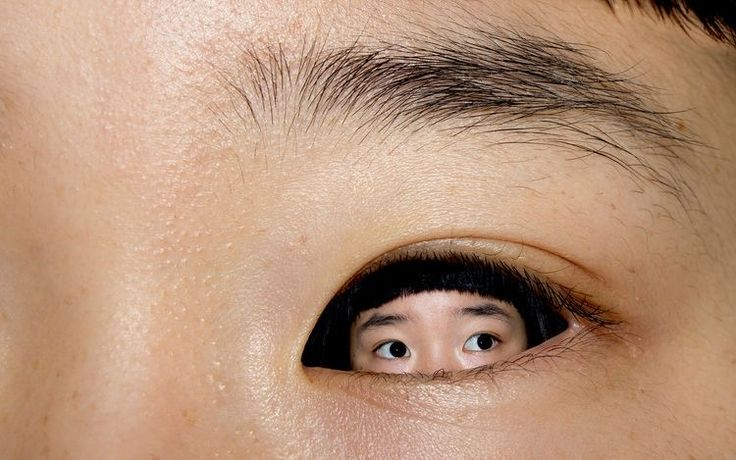